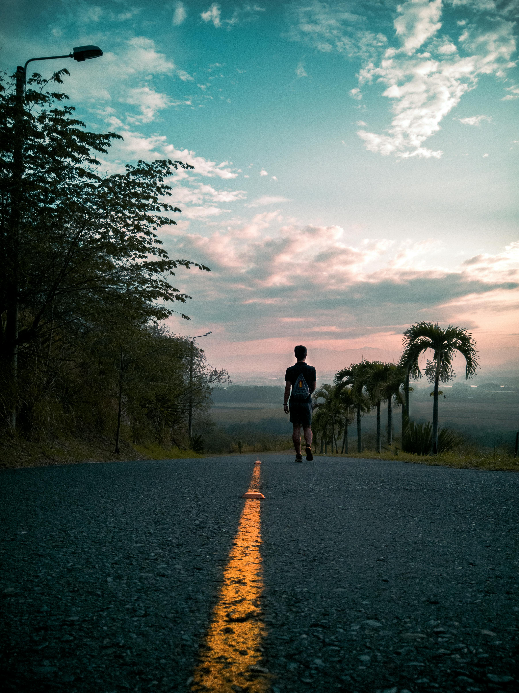
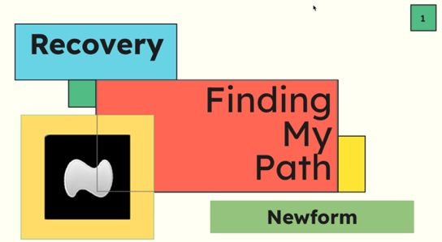

Find Your Recovery Path
This page shares information about the New Form approach to helping every individual in recovery see themselves as the whole person they truly are and to heal in their own way. We are more than our addiction, and the lives of those who have died were about more than what ended their lives.
Explore New Form and other approaches to recovery in more detail.

Connection Counters Addiction
This 37-second video takes you on a tour of the New Form community's spirit, vitality, togetherness, and hopefulness.
Walking Her Path, She Came to See Love in Grief
Tavyn is an informal ambassador for New Form. This video is her story of how feeling connected to New Form has supported her as she has walked her path. In a recent Peer Support Community Partners blog post, Tavyn writes, “Grief is the love we feel for our person, with nowhere to send it.”
The story block is preserved here, but the approved Tavyn video link or embed still needs to be added.

The Goal Is ‘Optimal Mental Health and Wellness’
In this video, Scott Strode tells the story of how The Phoenix, the national recovery organization he founded more than 20 years ago (Home Page / Boston Events), is now the springboard for New Form. The video calls it a “community of communities [with] the unifying goal of optimal mental wellness and recovery,” and Scott says, “the beauty of New Form is it's free.”